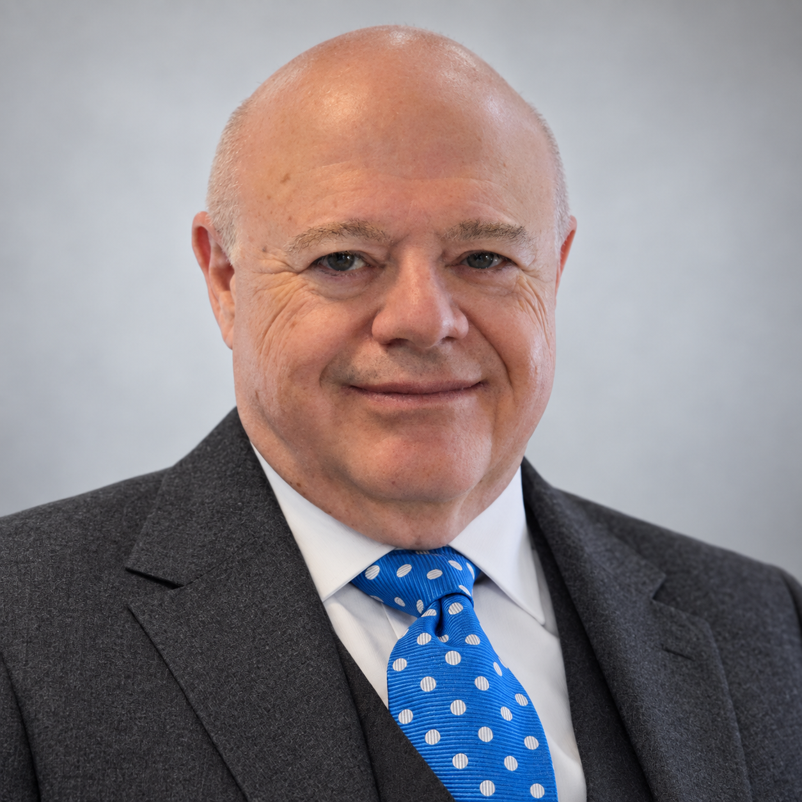

L’EXPÉRIENCE AU SERVICE DE RÉSULTATS CONCRETS.
Créer de la valeur.
Accélérer
la croissance.
La croissance ouvre des possibilités.
Elle révèle aussi des contraintes.
Nous travaillons avec les propriétaires et les équipes de direction pour repérer ce qui freine l’entreprise, établir les priorités et mettre en place les changements nécessaires.
Définir la prochaine étape ↗VOS PARTENAIRES DE CROISSANCE

Dr Baruch Pletner
Ingénierie, technologie
et finance
John Wanczycki
Exploitation, croissance
et affaires internationales
À vos côtés, de la première conversation à la mise en œuvre.
Faites notre connaissance ↗TROIS QUESTIONS. UNE ENTREPRISE.
Qu’est-ce qui freine la croissance?
Que faut-il changer pour grandir sur des bases solides?
QUAND LA CROISSANCE SE COMPLEXIFIE
Des fondations solides.
De nouveaux défis.
La demande est là. La technologie et l’ambition aussi. Il faut maintenant renforcer la capacité de l’entreprise à en tirer pleinement parti.
La demande augmente, mais les ressources de production, de livraison ou d’ingénierie ne suivent pas.
Trop de décisions remontent à la direction générale; les rôles et les responsabilités doivent être clarifiés, et la délégation doit évoluer.
Les prix, les marges, le fonds de roulement ou l’exécution des projets méritent un examen approfondi.
La commercialisation avance lentement, le travail sur mesure se prête mal à la croissance ou les marchés prioritaires restent à préciser.
Technologie · Fabrication · Entreprises industrielles · Technologies océaniques et propres · Services à forte intensité de connaissances
NOS SERVICES
Cibler le défi.
Viser le résultat.
Chaque mandat répond à un défi précis. Découvrez comment nous pouvons aider votre entreprise.
01Croissance et commercialisation
+
Déterminer les occasions de croissance à privilégier et transformer les capacités techniques en produits ou services que le marché est prêt à acheter.
- Priorités de croissance, choix des marchés et capacité du modèle d’affaires à soutenir la croissance
- Segmentation de la clientèle, positionnement, canaux de distribution et alliances stratégiques
- Stratégie produit, planification de la mise en marché des technologies et préparation à l’investissement
02Exploitation et organisation
+
Renforcer les opérations et la structure de gestion pour soutenir la prochaine étape de croissance.
- Capacité, processus de travail, productivité et exécution des projets
- Clarification des rôles et des responsabilités, délégation et systèmes de gestion
- Capacité de leadership, planification de la relève et mise en œuvre du changement
- Priorités de la chaîne d’approvisionnement et besoins d’affaires liés aux systèmes de gestion intégrés (ERP)
03Finance et performance
+
Prendre des décisions de croissance en tenant compte des liquidités, des marges et des ressources nécessaires pour passer à l’action.
- Flux de trésorerie, fonds de roulement, tarification et analyse des marges
- Modèles financiers, affectation du capital et décisions d’investissement
- Indicateurs de performance et information de gestion
- Programmes gouvernementaux de soutien à la croissance et préparation au financement
04Ingénierie et gestion technologique
+
Mettre une solide expérience technique au service des décisions d’ingénierie, de la réalisation des projets et de la planification des ressources.
- Conception en ingénierie et résolution de problèmes techniques
- Direction de la R-D, feuilles de route technologiques et vérification diligente technique
- Capacité d’ingénierie, supervision de projets critiques et développement de produits
- Productivité de l’ingénierie grâce à l’IA, en accord avec les priorités d’affaires
- Priorités de propriété intellectuelle, protection et stratégie de licences
- Apports commerciaux et techniques aux conseillers spécialisés en propriété intellectuelle
Notre accompagnement en propriété intellectuelle porte sur la stratégie d’affaires et technologique. Les avis juridiques, les procédures de demande de brevet et la rédaction juridique sont confiés à des professionnels externes qualifiés.
05Capacités numériques et IA
+
Améliorer la productivité et le service à la clientèle grâce à des outils d’IA et à des solutions numériques bien choisies.
- Priorités d’adoption de l’IA liées à des résultats d’affaires mesurables
- Interactions avec la clientèle et services de conciergerie assistés par l’IA
- Automatisation des processus et amélioration de l’informatique d’entreprise
- Choix technologiques et planification de la mise en œuvre
Lorsque des compétences techniques spécialisées sont nécessaires, nous faisons appel à Intelligent Dynamics Canada et à d’autres spécialistes de confiance.
06Croissance internationale et alliances stratégiques
+
Développer les marchés internationaux lorsque la stratégie et les capacités de l’entreprise le permettent.
- Préparation à l’exportation et priorisation des marchés
- Représentants, distributeurs et partenariats commerciaux
- Besoins en ressources, risques d’entrée sur les marchés et mesures d’atténuation
- Adéquation entre croissance internationale et capacité interne
Des spécialistes, lorsque le mandat l’exige.
Nous coordonnons les expertises complémentaires en ressources humaines, ingénierie spécialisée, réglementation, qualité, ERP, cybersécurité, droit, fiscalité, financement et fusions-acquisitions, en gardant le cap sur l’objectif d’affaires.
NOTRE ÉQUIPE
Des expériences complémentaires.
Une approche intégrée.
Deux dirigeants d’expérience, deux perspectives complémentaires sur vos défis d’affaires.
INGÉNIERIE · TECHNOLOGIE · FINANCE
Dr Baruch Pletner
P.Eng., MBA · Île-du-Prince-Édouard
Le Dr Baruch Pletner est ingénieur, entrepreneur et dirigeant. Il aide les entreprises à relier leurs capacités techniques aux possibilités commerciales. Son expérience couvre l’ingénierie de pointe, la commercialisation de technologies, le développement d’entreprises et la direction financière.
En savoir plus sur Baruch +
Baruch est titulaire d’un doctorat en génie aérospatial du Technion–Israel Institute of Technology et d’un MBA, avec concentration en comptabilité, de la D’Amore-McKim School of Business de la Northeastern University. Chez Active Control eXperts, une entreprise issue du MIT, il a occupé successivement les fonctions d’ingénieur principal, de gestionnaire principal de programmes et de directeur des applications de lithographie, contribuant tant aux activités techniques qu’au développement commercial. Après l’acquisition de l’entreprise par Cymer, il a poursuivi sa carrière à des postes de direction technique dans le secteur des équipements pour semi-conducteurs.
Il a ensuite fondé IPTRADE Inc., une entreprise de services d’ingénierie et de technologie destinée au secteur des semi-conducteurs, tout en participant directement au développement. Ses travaux ont contribué à plusieurs brevets portant sur le contrôle des vibrations, la détection et les systèmes piézoélectriques. Il possède plusieurs décennies d’expérience dans l’intégration de la stratégie de propriété intellectuelle au développement et à la commercialisation de produits.
Depuis son installation au Canada atlantique, Baruch a assumé des responsabilités de direction technologique, de gestion de la R-D et de réalisation de grands projets. Il a contribué au redressement du projet solaire et de stockage par batteries Summerside Sunbank, supervisant un budget d’environ 50 millions de dollars et une organisation de plus de 100 personnes. À titre de directeur de l’exploitation et des finances de Rubber Ring Creative, il a participé au développement de l’entreprise tout en dirigeant ses fonctions opérationnelles et financières.
Son expérience internationale comprend de nombreux travaux aux États-Unis et au Japon, principalement avec Nikon, ainsi qu’avec Honda R&D, Toshiba, Arakawa et Canon. Par l’entremise d’Intelligent Dynamics Canada, il conjugue pratique de l’ingénierie, conseil technologique de haut niveau et applications concrètes de l’IA à la productivité de l’ingénierie et aux activités d’entreprise.
Chez Headland, Baruch apporte le regard d’un ingénieur et d’un bâtisseur d’entreprises : évaluer ce qui peut fonctionner, ce qui est viable sur le plan commercial et la façon de mobiliser les ressources nécessaires pour transformer la technologie en valeur durable.
CROISSANCE · EXPLOITATION · AFFAIRES INTERNATIONALES
John Wanczycki
Halifax, Nouvelle-Écosse
John Wanczycki est un dirigeant et conseiller qui aide les entreprises à renforcer les équipes, les processus et les capacités de gestion nécessaires à leur croissance. Son expérience couvre la fabrication, les technologies environnementales, les affaires internationales et le développement organisationnel.
En savoir plus sur John +
De 2016 à 2024, John a été directeur de l’exploitation de Trecan Combustion Limited, un fabricant néo-écossais d’équipements industriels spécialisés destinés aux marchés internationaux. En étroite collaboration avec le chef de la direction et propriétaire, il a accompagné une croissance importante, accru la capacité opérationnelle et renforcé les systèmes de gestion, tout en répondant aux défis d’approvisionnement, de développement des marchés et de transition de la haute direction.
Son expérience internationale comprend des mandats de haut niveau dans 17 pays sur cinq continents. Conseillant des institutions financières internationales, dont la Banque mondiale, et des gouvernements nationaux, il a contribué à la planification, à l’évaluation ou à la vérification diligente d’initiatives d’une valeur totale supérieure à 400 millions de dollars américains. Ces mandats portaient sur la commercialisation de technologies, les alliances stratégiques, les technologies environnementales, les infrastructures et les grands projets.
Il a auparavant été vice-président au développement international de l’Ontario Centre for Environmental Technology Advancement, ainsi que président du conseil et président de l’Environmental Services Association of Nova Scotia and the Maritimes. Ses travaux en stratégie et en politiques publiques à Ottawa et à Washington lui ont également permis d’approfondir sa compréhension des programmes gouvernementaux et des moyens d’obtenir du soutien à la croissance des entreprises.
John accompagne des entreprises technologiques comme mentor au Creative Destruction Lab–Atlantic de l’Université Dalhousie, siège au conseil d’administration du Scotia Festival of Music et contribue au comité des politiques gouvernementales de la Chambre de commerce d’Halifax.
Il a donné des conférences en gestion internationale dans des programmes de maîtrise en Amérique du Nord et à l’Académie chinoise des sciences. John parle couramment l’anglais et le français.
Chez Headland, John apporte une perspective de dirigeant opérationnel : cerner les freins au progrès, relier la stratégie à l’exécution quotidienne et aider les propriétaires et les équipes de direction à développer leur capacité pour la prochaine étape de croissance.
La force de cette complémentarité
Une contrainte de production peut avoir sa source dans le fonds de roulement. Un problème de commercialisation peut exiger à la fois un jugement d’ingénieur et une autre voie d’accès au marché. Nous examinons ces liens et travaillons avec la direction sur les changements qui comptent.
NOTRE MÉTHODE
De la compréhension à la mise en œuvre.
Comprendre
L’entreprise, ses ambitions et le défi à relever.
Diagnostiquer
Le problème de fond et ses causes.
Prioriser
Les actions les plus susceptibles de créer de la valeur.
Mettre en œuvre
Des changements assortis de responsabilités et de jalons clairs.
Mesurer
Les progrès à l’aide d’indicateurs de performance concrets.
Un point de départ bien défini
Un diagnostic de croissance ciblé permet d’établir les priorités. La suite peut prendre la forme d’un projet de mise en œuvre, d’un soutien de direction à temps partiel, selon les besoins, de conseils à la direction générale ou d’un mandat particulier. La portée, les responsabilités et les critères de réussite sont convenus pour chaque mandat.
COMMENÇONS PAR UNE CONVERSATION
Parlons de vos défis
de croissance.
Un premier échange nous permettra de comprendre votre situation, de cerner les possibilités et de voir comment nous pouvons vous aider concrètement.
Nous accompagnons les entreprises en français et en anglais.